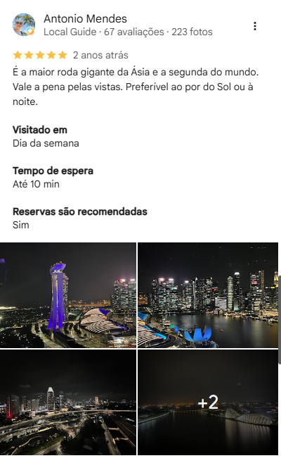
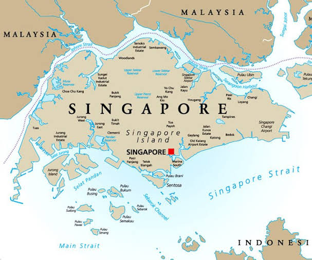
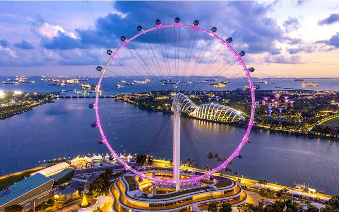
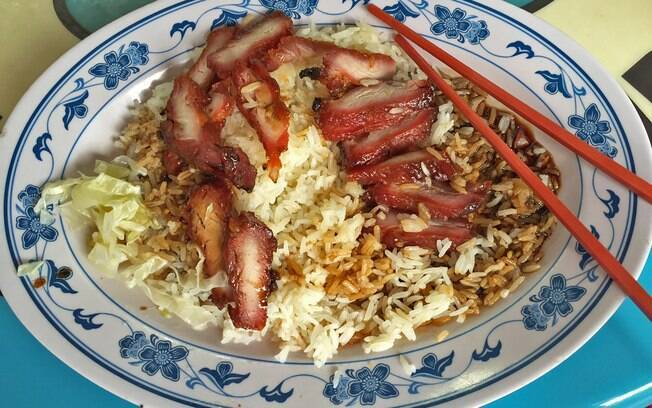

Veja o que dizem do Singapore Flyer!

O coração do comércio na Ásia!

Singapura, oficialmente República de Singapura, é uma cidade-Estado insular localizada na ponta sul da Península Malaia, no Sudeste Asiático, 137 quilômetros ao norte do equador. Constituído por 63 ilhas, Singapura é separado da Malásia pelo Estreito de Jor, ao norte, e das Ilhas Riau (Indonésia) pelo Estreito de Singapura, ao sul. O país é o que apresenta o maior Índice de Desenvolvimento Humano dos países asiáticos e 9.° melhor do mundo em 2014. O seu território é altamente urbanizado, mas quase metade dele é coberto por vegetação. No entanto, mais terras estão sendo criadas para o desenvolvimento por meio do processo de aterramento marítimo.
A economia depende fortemente da indústria e dos serviços. O país é um líder mundial em diversas áreas: é o quarto principal centro financeiro do mundo, o segundo maior mercado de casinos e o terceiro maior centro de refinação de petróleo do mundo. Seu porto é um dos cinco mais movimentados do mundo. O país é o lar do maior número de famílias milionárias em dólares per capita do planeta. O Banco Mundial considera a cidade como o melhor lugar no mundo para se fazer negócios. O país tem o terceiro maior PIB per capita por paridade do poder de compra do mundo, tornando Singapura um dos países mais ricos do planeta.
Cerca de 5 milhões de pessoas vivem em Singapura, dos quais 2,91 milhões nasceram no local. A maioria da população é descendente de chineses, malaios e indianos. Há quatro línguas oficiais: inglês, chinês, malaio e tâmil. Um dos cinco membros fundadores da Associação de Nações do Sudeste Asiático, Singapura também abriga a Secretaria da APEC e é membro da Cúpula do Leste Asiático, do Movimento dos Países Não Alinhados e da Commonwealth.

As atrações principais da metropole futurista são:


Esse pequeno e recente país que fica ao sul da Malásia traz um cenário gastronômico muito amplo e com um conceito de comida de rua tão rico que lá são feitas até convenções internacionais sobre isso. Singapura é tão organizado nesse assunto que foram criados os chamados Hawker Centers, que são centros de comida de rua onde os comerciantes dispõem de uma estrutura para vender os seus produtos.
Entre os pratos mais emplematicos podemos citar: